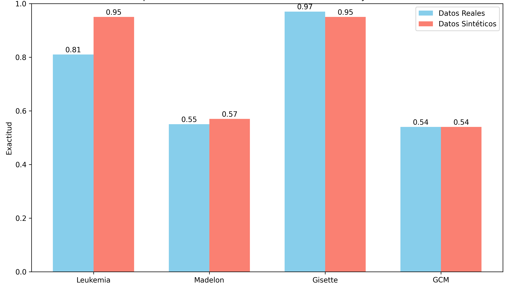
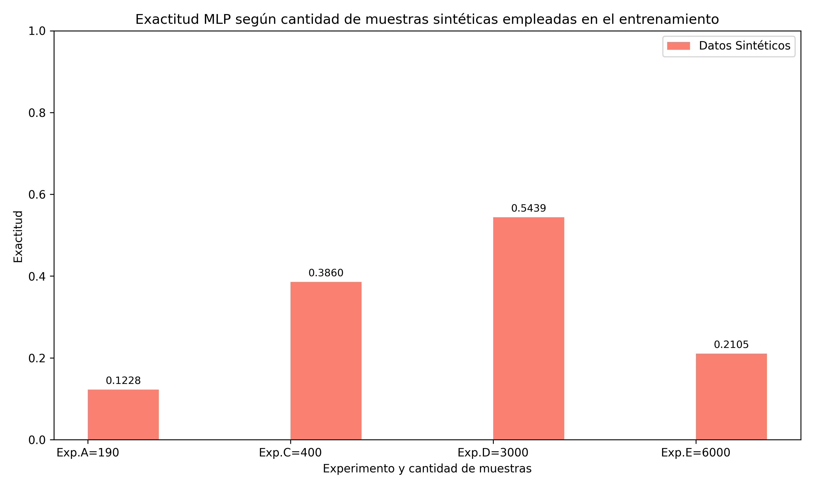
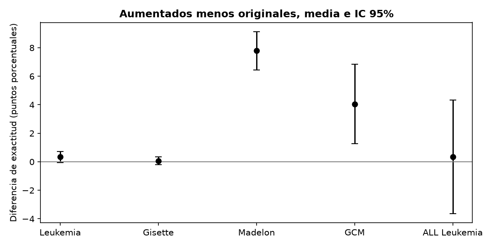
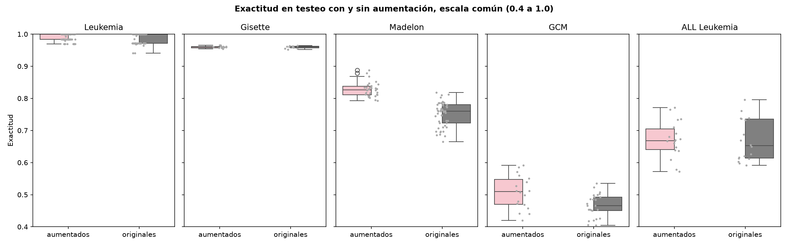
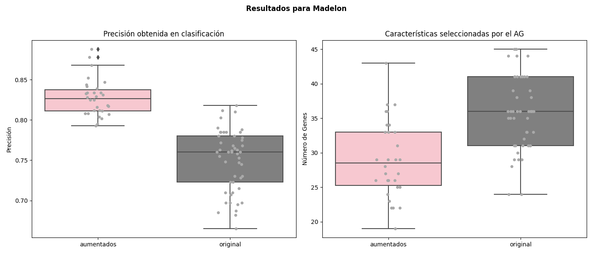
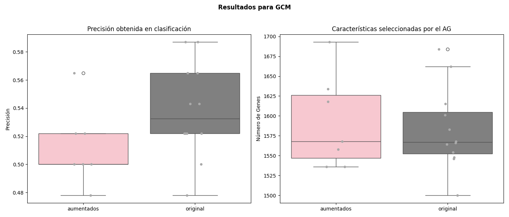
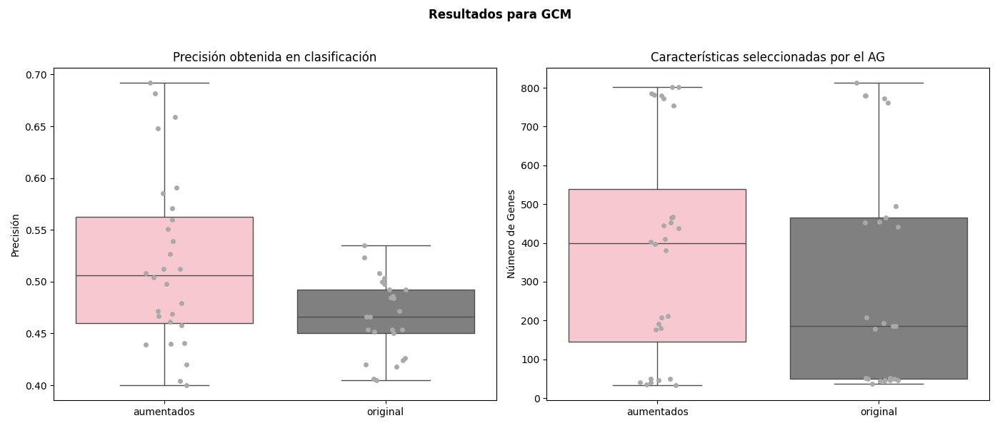
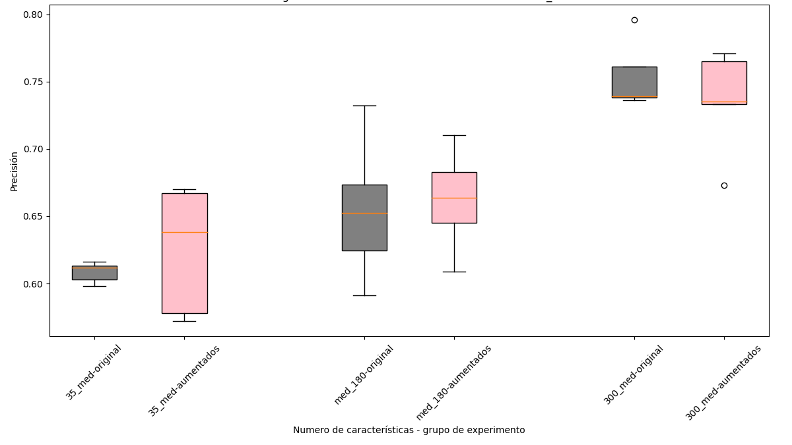
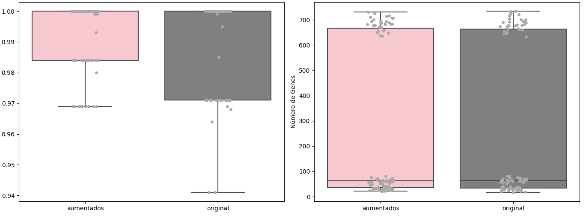
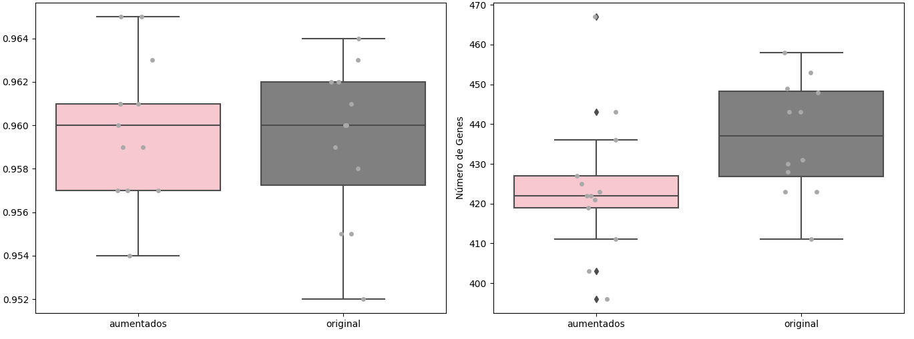

Aumentación de datos mediante autoencoders variacionales y su impacto en estrategias de selección de características basadas en algoritmos genéticos
Claudio Sebastián Castillo Director: Dr. Matías Gerard · Codirector: Dr. Leandro Vignolo
Universidad Tecnológica Nacional, Facultad Regional Paraná · 2025
Problema
El problema en una frase
Seleccionar características con un algoritmo genético exige evaluar miles de subconjuntos, y cada evaluación vale lo que valen los datos.
Alta dimensionalidadEscasez muestralDesbalanceRuido
Problema
Dónde duele la escasez de datos
Los métodos envolventes evalúan cada subconjunto con un modelo. Con pocas muestras, la aptitud deja de distinguir subconjuntos buenos de malos.
Hipótesis
Hipótesis y objetivos
Aumentar sintéticamente las muestras con un autocodificador variacional mejora la selección de características con algoritmos genéticos.
Integrar la aumentación con autocodificadores variacionales en el flujo del algoritmo genético.
Evaluar la estrategia en conjuntos de datos de distinta complejidad.
Comparar, con el mismo algoritmo genético, los resultados con y sin aumentación.
Datos
Cinco conjuntos de datos
Conjunto
Observaciones
Características
Clases
Desafío principal
Leukemia
72
7 129
2
más variables que muestras, desbalance
Gisette
13 500
5 000
2
la mitad de las variables son ruido
Madelon
2 000
500
2
20 variables con señal, 480 de ruido
GCM
190
16 063
14
multiclase desbalanceado, muy pocas muestras
ALL Leukemia
327
12 600
14
multiclase desbalanceado, usado para validar
Tres de expresión génica y dos del desafío de selección de características NIPS 2003. Siempre se evaluó en la partición original de testeo.
Datos
Línea base: qué logran los modelos clásicos
Conjunto
Mejor modelo
Mediana de 18
Leukemia
1,00
0,97
Gisette
1,00
0,99
Madelon
0,91
0,64
GCM
0,71
0,58
Leukemia y Gisette están cerca de saturar: casi cualquier modelo acierta.
Madelon y GCM tienen margen: la mayoría de los modelos falla.
AUC en los binarios y macro-F1 en GCM, sobre el espacio completo de características, con búsqueda en grilla por modelo. Tabla 2.1 de la tesis.
Método
El autocodificador variacional
pérdida = error de reconstrucción (MSE) + divergencia KL entre N(μ, σ²) y N(0, I)
Tres capas lineales con normalización por lotes en cada lado. Para los multiclase, una versión condicional por clase con pesos de clase y muestreo ponderado. Hiperparámetros por optimización bayesiana.
Método
Los datos sintéticos sirven para entrenar

Cómo leer: un perceptrón multicapa entrenado solo con datos sintéticos, evaluado en los datos reales de testeo, frente al mismo modelo entrenado con los datos reales.
Método
Más muestras no siempre es mejor

Cómo leer: exactitud del MLP en GCM entrenado con 190, 400, 3 000 y 6 000 muestras sintéticas.
En GCM, 3 000 muestras balanceadas (214 por clase) igualan al modelo con datos reales.
Con 6 000 el rendimiento cae: el generador empieza a repetirse y el clasificador se sobreajusta a lo sintético.
Un espacio latente de 35 dimensiones superó a uno de 50.
Método
El algoritmo genético
Entre el 0,3% y el 10% de las posiciones activas al inicio, según el conjunto de datos.
Mismo algoritmo, mismos parámetros, dos entradas: los datos originales, o los originales más las muestras sintéticas.
Evaluación siempre en la partición original de testeo, sin sintéticos.
Tres criterios de mejora:
exactitud en testeo,
número de características seleccionadas,
estabilidad entre corridas independientes.
Resultados
Resultados globales
Conjunto
Corridas (aum. / orig.)
Sin aumentación
Con aumentación
Diferencia
p
Lectura
Leukemia
90 / 90
0,989
0,992
+0,3 pp
0,09
saturado, sin cambio
Gisette
13 / 12
0,959
0,960
+0,1 pp
0,63
saturado, sin cambio
Madelon
30 / 49
0,750
0,828
+7,8 pp
< 0,001
mejora significativa
GCM, segunda etapa
9 / 10
0,497
0,541
+4,4 pp
0,005
mejora significativa
ALL Leukemia
18 / 18
0,669
0,672
+0,3 pp
0,87
sin cambio
Exactitud media de la población final sobre la partición original de testeo. Diferencia en puntos porcentuales. Test t de Welch entre corridas.
Resultados
Dónde existe el efecto

Cómo leer: diferencia de exactitud con aumentación menos sin aumentación, en puntos porcentuales, con intervalo de confianza del 95%. Donde la barra cruza el cero no hay evidencia de efecto.
Resultados
La regla

Cómo leer: misma escala de 0,4 a 1,0 en los cinco paneles. Rosado con aumentación, gris sin aumentación; cada punto es una corrida.
Saturado: no cambia. Con margen y buena reconstrucción: mejora.
Resultados
Madelon: la señal entre el ruido
+7,8puntos de exactitud
0,750 → 0,82830 corridas con aumentación, 49 sin, p < 0,001
36 → 29características seleccionadas en promedio

2 000 muestras sintéticas sumadas a las 2 000 originales.
Resultados
GCM, primera etapa: falló
Autocodificador condicional sobre las 16 063 variables, 1 400 muestras sintéticas.
0,538 → 0,512la aumentación empeoró la exactitud
Diagnóstico: un perceptrón entrenado con los sintéticos acierta el 100% en sintéticos y el 50% en reales.
La distribución sintética no representa a la real: colapso de la posterior, la divergencia KL domina la pérdida.

Resultados
Selección, generación, selección
+4,4puntos de exactitud
0,497 → 0,5419 corridas con aumentación, 10 sin, p = 0,005

Resultados
ALL Leukemia: validación del flujo

Cómo leer: exactitud por tamaño del subconjunto, 35, 180 y 300 genes. Rosado con aumentación, gris sin.
Mismo flujo de tres etapas, 1 000 muestras sintéticas, 327 muestras de 14 clases.
Genes
Sin
Con
p
35
0,608
0,625
0,48
180
0,654
0,663
0,65
300
0,754
0,735
0,40
Tendencia favorable con reducciones fuertes, sin significación estadística. Con 300 genes, sin diferencia.
Resultados
Qué significa "mejora", criterio por criterio
Conjunto
Desempeño predictivo
Reducción de variables
Estabilidad de la exactitud
Leukemia
sin diferencia
igual, 259 y 259
mejora, desv. 0,011 frente a 0,016
Gisette
sin diferencia
mejora, 424 frente a 437
leve, 0,003 frente a 0,004
Madelon
mejora, +7,8 pp
mejora, 29 frente a 36
mejora, 0,023 frente a 0,038
GCM
mejora, +4,4 pp
igual
empeora, 0,052 frente a 0,036
ALL Leukemia
sin diferencia
igual, 174 y 173
leve, 0,056 frente a 0,065
Los tres criterios no se mueven juntos. En GCM la exactitud mejora y la dispersión aumenta; en Leukemia solo mejora la estabilidad.
Cierre
Limitaciones
Cinco conjuntos de datos, dos artificiales; el efecto depende de la dificultad del problema.
Pocas corridas en los multiclase, entre 5 y 10 por configuración, y particiones de testeo chicas.
El efecto depende de la calidad de reconstrucción del autocodificador: en GCM falló hasta reducir el espacio.
Hay un umbral de muestras sintéticas más allá del cual el resultado se degrada.
Un solo clasificador como evaluador y parámetros ajustados por conjunto; no se transfieren sin reajuste.
Cierre
Conclusiones y trabajos futuros
Conclusiones
Integrar un autocodificador variacional antes del algoritmo genético es viable y mejora la selección cuando el problema tiene margen: Madelon y GCM.
En problemas saturados no cambia la exactitud; aporta estabilidad y, a veces, subconjuntos más compactos.
En multiclase desbalanceado, generar sobre un subespacio seleccionado antes es lo que hace funcionar la aumentación.
Trabajos futuros
Reponderar la divergencia KL con recocido e intentar autocodificadores jerárquicos.
Optimizar en conjunto el generador y el algoritmo genético, con retroalimentación entre ambos.
Encadenar y ensamblar varias instancias de generador y selector.
Comparar con SMOTE y otros métodos de aumentación dentro del mismo flujo.
Gracias
Preguntas
Claudio Sebastián Castillo Código y experimentos: github.com/castillosebastian/ealab
Respaldo
Respaldo
Leukemia y Gisette: saturados

Leukemia: 0,992 frente a 0,989, p = 0,09. Menor dispersión con aumentación. 6 779 genes elegidos alguna vez: alta redundancia.

Gisette: 0,960 frente a 0,959, p = 0,63. Subconjuntos de 424 frente a 437 variables, con rango intercuartílico 8 frente a 21.
Respaldo
Frente a otras referencias
Conjunto
MLP, todas las variables
AG sin aumentación
AG con aumentación
Variables usadas por el AG
Literatura
Leukemia
0,81
0,989
0,992
30 a 680 de 7 129
Golub 1999: 50 genes
Gisette
0,97
0,959
0,960
437 y 424 de 5 000
NIPS 2003
Madelon
0,55
0,750
0,828
36 y 29 de 500
NIPS 2003: error balanceado ~0,07
GCM
0,54
0,497
0,541
450 a 780 de 16 063
Ramaswamy 2001: 0,78 con 16 063 genes
ALL Leukemia
—
0,669
0,672
35 a 300 de 12 600
Yeoh 2002
MLP del capítulo 3 entrenado con datos reales en las particiones originales. La función de aptitud penaliza el número de variables con peso 0,5, de modo que el AG cambia exactitud por dimensionalidad por diseño. Los modelos del capítulo 2 usan AUC y macro-F1 sobre otra partición y no son comparables directamente.
Respaldo
Por qué autocodificadores y no SMOTE
Blagus y Lusa (2013): en alta dimensionalidad con pocas muestras, SMOTE no aporta beneficio salvo que se seleccionen variables antes. Es exactamente el escenario de Leukemia, GCM y ALL Leukemia.
Fajardo et al. (2021): sobre MNIST y Fashion MNIST desbalanceados, el autocodificador condicional supera a sobremuestreo aleatorio, SMOTE y GAN.
Ai et al. (2023): los autocodificadores guiados superan a otros métodos de sobremuestreo en datos tabulares e imágenes.
SMOTE rebalancea clases interpolando vecinos; aquí la aumentación también se usa en problemas balanceados, como Madelon y Gisette, para ampliar la muestra.
Un estudio comparativo con SMOTE dentro del mismo flujo queda como trabajo futuro inmediato.
Respaldo
Significación en GCM, con las corridas reales
Comparación
Corridas (aum. / orig.)
Sin
Con
Welch p
Mann-Whitney p
Cromosomas de 450 y 780 genes
9 / 10
0,497
0,541
0,005
0,006
Toda la segunda etapa
18 / 25
0,467
0,507
0,008
0,011
Cromosomas de ~200 genes
6 / 8
0,454
0,485
0,24
0,28
Cromosomas de ~45 genes
3 / 7
0,439
0,451
0,42
0,65
Cada corrida del algoritmo genético es una observación. Recalculado sobre el archivo de experimentos del repositorio.